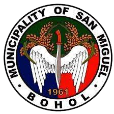

We commit ourselves a proactive and responsive management of resources and honest, sincere delivery of public services to promote social, economic,political and cultural transformation.
San Miguel is a prime agro-industrial center and eco-tourism destination with a progresive community in a healthy environment.
To increase household income of all farmers in San Miguel;
To generate revenue and employment;
To protect and rehabilitate forest resources and manage solid waste;
To provide social services which is accessible and affordable;
To promote community safety and security;and
To develop an efficient local organization which is responsive to the needs of the LGU and Community.